The Challenge
To create a website for Kossar + Garry Achitects that delivers amazing projects to KGA Clients, helping KGA achieve its long-term business goals to successfully expand the team.
Persona
The main target groups of the KGA websites are divided into two groups. One is investors, who are seeking professional, cost-effective construction companies to design the projects they invest in； And new architects, who are looking for developing companies with large space.
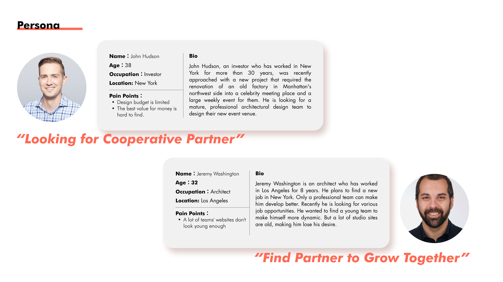Pain Point：
Investors:
1. Limited budget;
2. It is difficult to find a cost-effective design team.
Young Architect：
1. It is difficult to find out whether the team is dynamic in the website;
The Long Term Goal
Increase the number of users; Enhance the website professionalism; Improve user browsing fluency.
How to measure the design success?
Has the number of visitors and visitors‘ areas increased.
What makes the design fail?
A bad user experience would create a sense of distrust of the KGA.
What should be avoided?
The projects are the most important , there should not be too much complex UI or layout on the website.
The Main Focus
How to make users feel the professionalism of KGA through browsing the website, and highlight the advantages of the projects themselves, so that users can experience the value of KGA, and have a higher sense of trust in KGA.
Competitor Analysis
In the competitor analysis, I chose five architectural design companies websites as competing products, and analyzed their website structure, style, color, page design, etc.
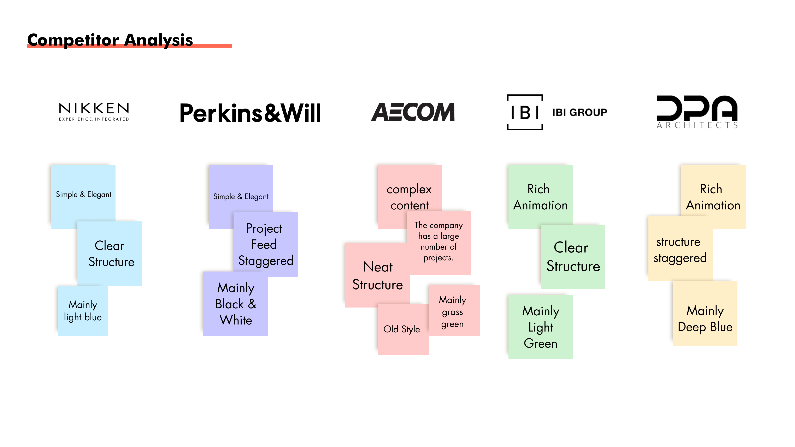
- Nikken and Perkins & Will have a simple and elegant design. The project presentation is clear and the site structure is clear. The project's strengths are prominent, and the colors used are mainly primary, black and white.
- AECOM not only focuses on architectural design, but also does all kinds of engineering and so on. The volume is large, the projects are extensive, and the website pages are complex.
- IBI webs design s creative, bold colors and a simple website framework.
- The DPA page has many animations, complex page structure and strong design, but disturbing users to focus on the project itself.
Brain Storming
After defining challenges and goals, I did a multi-program design based on competitor analysis and KGA's needs.
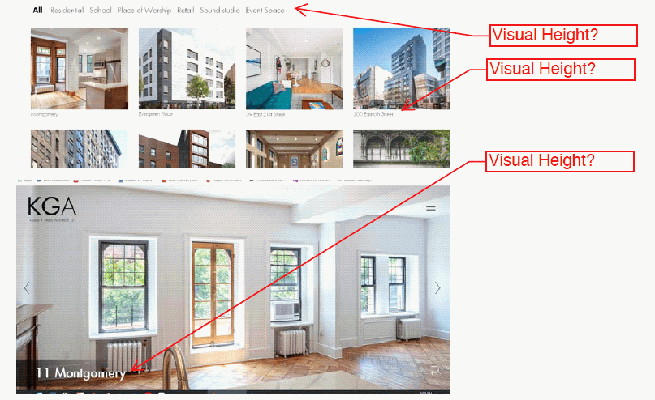Finally, we decided on the architecture, the prototype of the final website.
Site Map
The main pages of the site are "Home", "Projects", "Insights", "About", "News" and "English/Chinese".
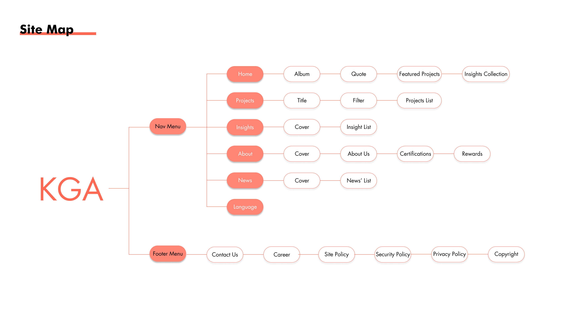 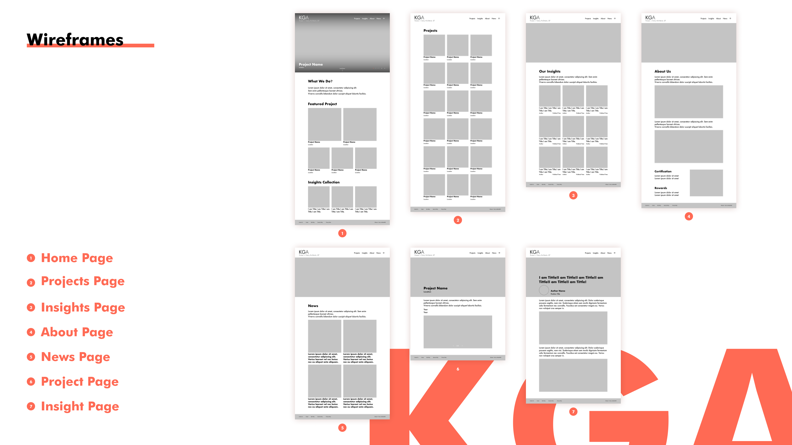Final Website Visual Design
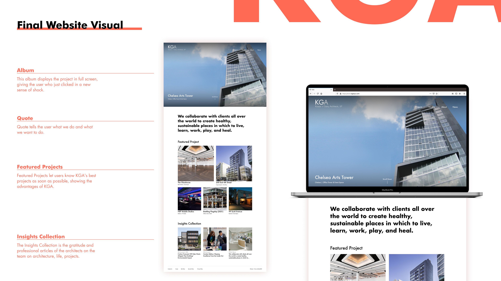 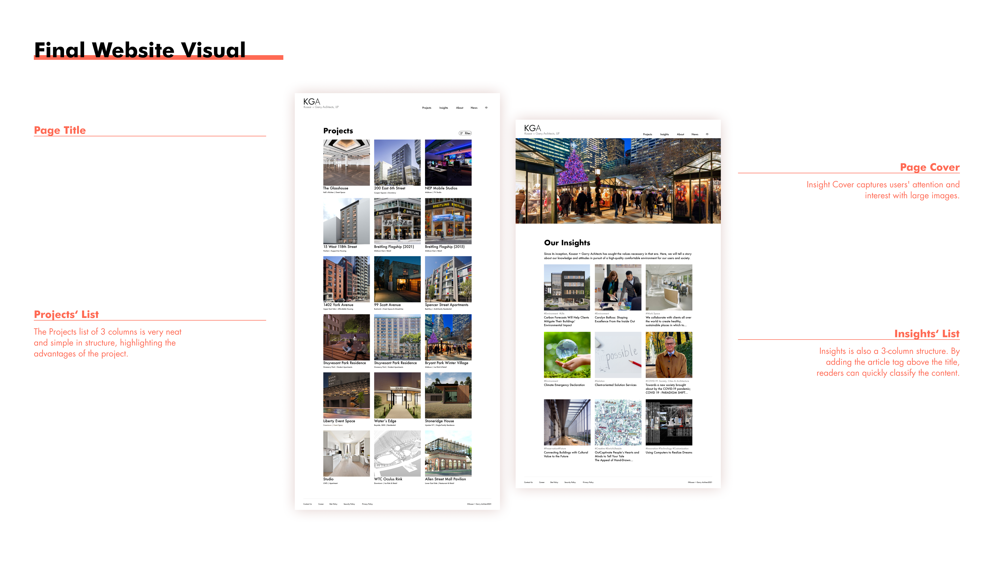 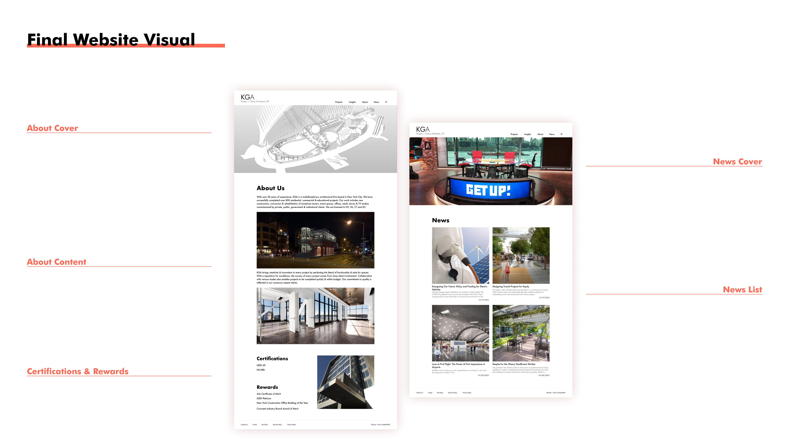 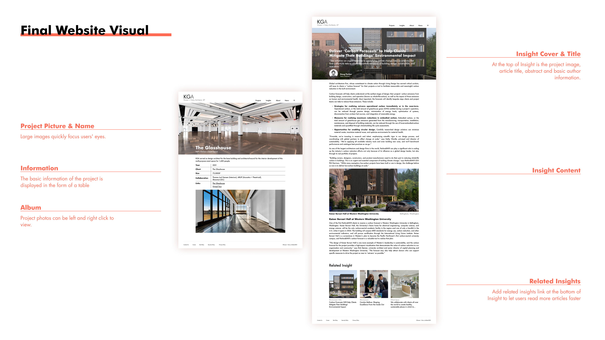Final Mobile Visual Design
 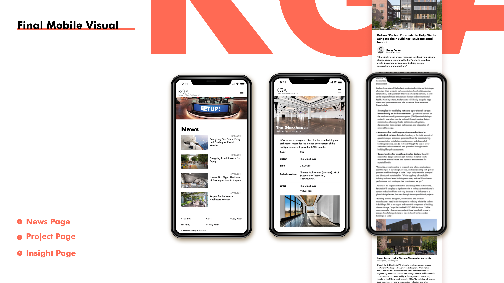
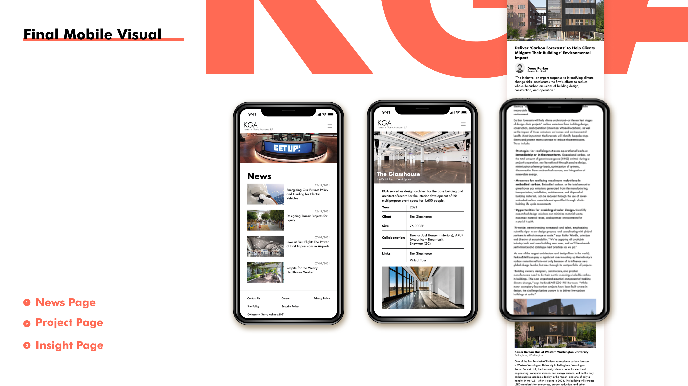
Analytics
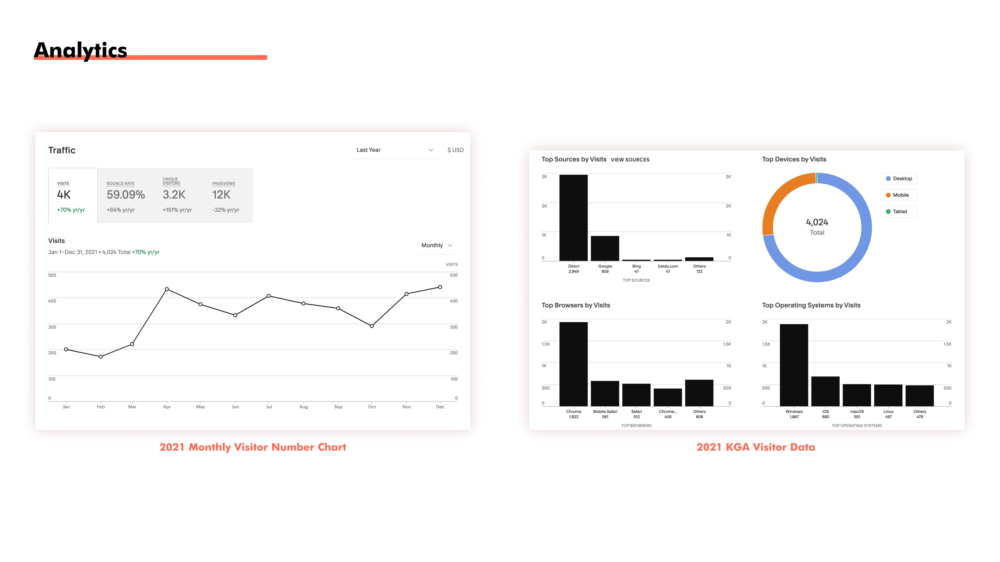The data showed that in 2021 KGA website viewers reached 4k+. The number of visitors fluctuates from January to December, with the lowest number of visitors in February and the highest number in April and December. The majority of users use computers to browse the site.
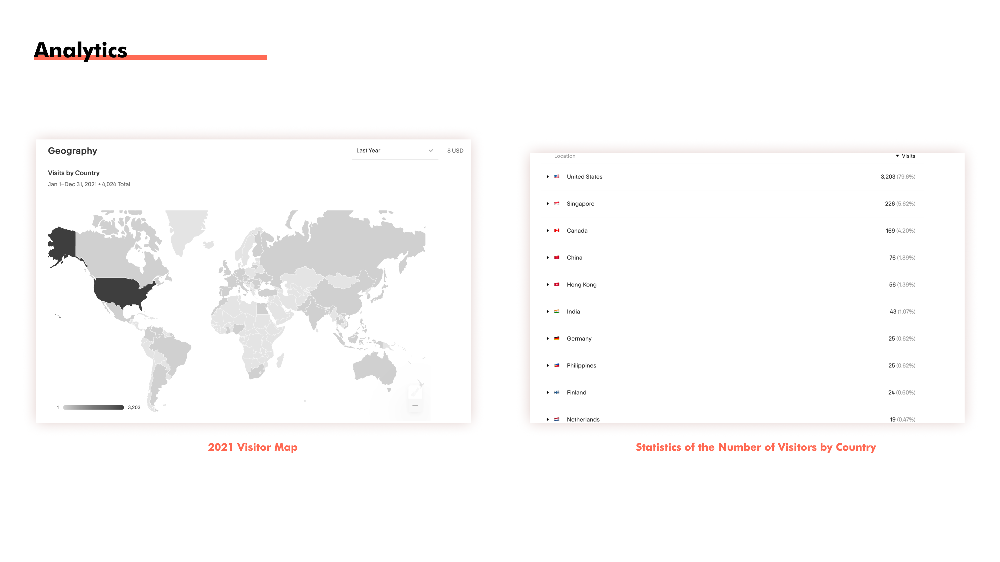The number of regions where users are browsing has also increased significantly, with nearly 1k of the 4k+ viewers coming from outside the US, including 226 from Singapore, 169 from Canada and 132 from China.
Recommandation
Recommendation from Junior Partner, Patrick
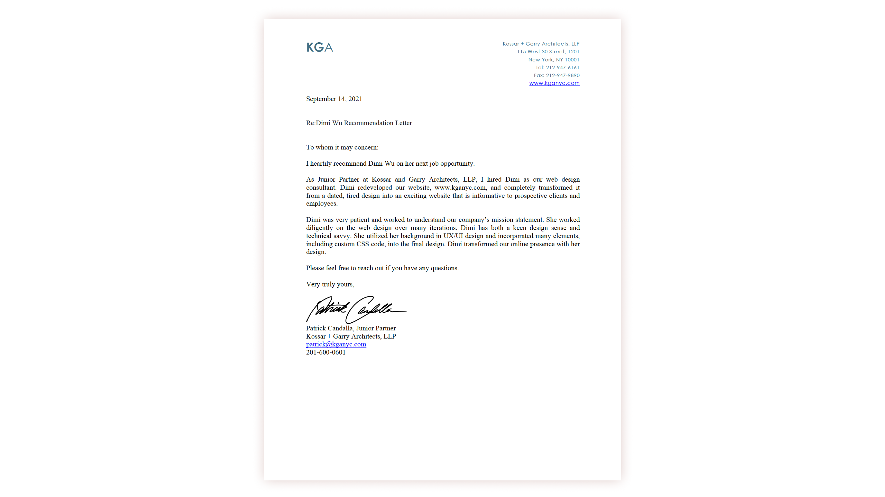